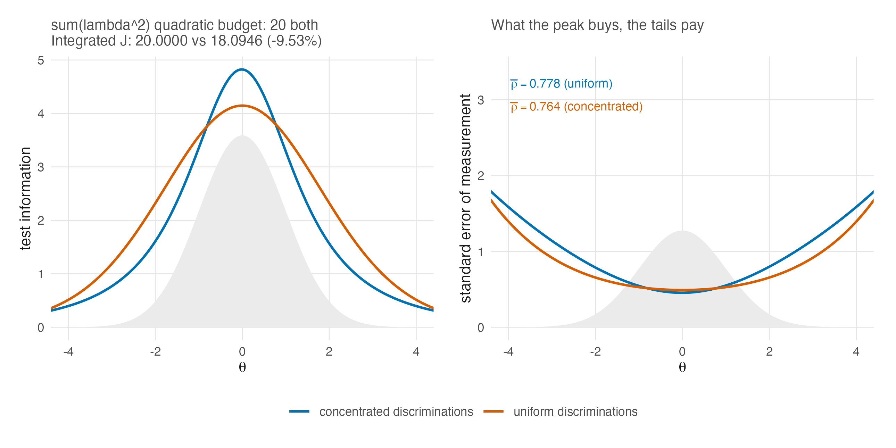

24 Discrimination and Information
The body of this book carries the two-parameter model everywhere the argument needs it: Chapter 3 defines it and records what it gives up, Chapter 5 explains why its item parameters cannot be conditioned away, Chapter 6 specializes the person estimators, and Chapter 9 treats its discrimination scale as a design lever. What those chapters do not do is sit with the model long enough to ask what discrimination does. This part of the book does that in three steps: information in this chapter, reliability in Chapter 25, identification and the DPM in Chapter 26.
The organizing fact is easy to state. Under the Rasch model every item speaks with the same voice, and a test’s information profile is set entirely by where its difficulties sit. Under the 2PL the items also differ in how loudly they speak, and the analyst, or the estimation, decides where the volume goes. Everything in this chapter is a consequence of that one addition.
24.1 Where information comes from
Section 7.1 built the information function for the Rasch model; Section 9.3 already displayed its 2PL form. An item with discrimination \(\lambda_i\) and difficulty \(\beta_i\) contributes
\[ \mathcal{J}_i(\theta) \;=\; \lambda_i^2\, \pi_i(\theta)\,\{1 - \pi_i(\theta)\}, \qquad \pi_i(\theta) = \operatorname{logit}^{-1}\{\lambda_i(\theta - \beta_i)\}, \tag{24.1}\]
and the test information is the sum. Two features of Equation 24.1 do all the work that follows.
First, the discrimination enters twice. The factor \(\lambda_i^2\) raises the item’s ceiling: at its own difficulty, where \(\pi_i = 1/2\), the item delivers \(\lambda_i^2/4\), against \(1/4\) for a Rasch item. But the same \(\lambda_i\) inside the response function steepens the curve, so \(\pi_i(1-\pi_i)\) collapses faster as \(\theta\) moves away from \(\beta_i\). A discriminating item is a tall, narrow tower of information; a weak item is a low, wide mound. The height-for-width exchange is not conservation of total information, because \(d\pi_i/d\theta=\lambda_i\pi_i(1-\pi_i)\) and therefore
\[ \int_{-\infty}^{\infty}\mathcal{J}_i(\theta)\,d\theta = \lambda_i\int_0^1 d\pi_i = \lambda_i. \tag{24.2}\]
Doubling \(\lambda_i\) thus quadruples the peak, roughly halves the width, and doubles the integrated item information.
Second, information remains additive across items, exactly as in Section 7.1, so a test is a portfolio. Difficulty controls where an item contributes; discrimination changes its peak, width, and integrated area. The Rasch model allocates equal-strength items by difficulty alone. The 2PL adds a second decision that changes both how much integrated information the portfolio carries and where that information lies.
24.2 One quadratic budget, two allocations
The cleanest way to see the trade is to hold one particular budget fixed and move its allocation. Figure 24.1 compares two twenty-item tests with identical difficulties and identical quadratic-discrimination budgets \(\sum_i \lambda_i^2\); equivalently, that quantity is four times the sum of the items’ individual peak heights. It is not a conserved total-information budget. One form spreads the quadratic budget evenly, while the other places its strongest items at the centre of the population.

In the plotted construction, both quadratic budgets equal 20, but Equation 24.2 makes the integrated test information \(\sum_i\lambda_i\): 20.0000 for the uniform form and 18.0946 for the concentrated form. The latter is 9.53 percent lower. What the construction conserves is the summed item-peak budget, not information integrated over the ability scale.
The concentrated test dominates where most examinees are and is much worse where few are. Whether that is a good exchange depends entirely on the question being asked of the scores, which is the recurring lesson of this book in a new costume. For a fixed cut-score near the centre, concentration is close to free. For individual estimates over the whole range, the tails of the shaded population pay measurement error at rates the peak never repays — the printed \(\bar\rho\) values in the figure make the point, and Chapter 25 explains why the functional that produces them is the one that notices the deserts.
The figure provides a mechanism with which to read, but not causally explain, a pattern in the companion simulation’s design. At matched target reliability, the calibrated 2PL forms are consistently shorter than the Rasch forms: the realized ladder in Table 25.2 of Chapter 25 runs roughly seven items against eight at the bottom tier and 62 against 68 at the top (Lee 2026a). That ladder jointly calibrated test length and a global discrimination multiplier \(c^*\), however, and the model families also carry different discrimination profiles. The observed length asymmetry therefore belongs to the joint length-plus-\(c^*\) design bundle. It is compatible with the height, width, and area mechanism above, but it does not identify a causal effect in which discrimination heterogeneity alone shortened the forms.
24.3 What concentration does to scoring
The estimation consequences follow from Chapter 6 without new machinery, but they are worth collecting, because each one turns into an empirical pattern in the companion volumes.
The score is no longer the raw sum. Proposition 3.1 established that the 2PL’s sufficient statistic for \(\theta_p\) is the weighted score \(\sum_i \lambda_i u_{pi}\) (Equation 6.7). Concentration therefore changes not just precision but which response patterns are distinguished: two examinees with the same number correct part ways when their correct answers sit on items of different weight. Under an ideal Rasch analysis with item parameters treated as known and a common prior, the exact posterior depends on a response vector only through its raw sum. Its posterior mean is therefore constant within each raw-score class, and an \(I\)-item test supports at most \(I+1\) such values. Under a 2PL fit with heterogeneous discriminations the number of attainable values multiplies. That ideal known-item result does not imply exact equality in a joint item-and-person fit: shared item-parameter uncertainty can produce real within-class variation in marginal person posteriors, with Monte Carlo error adding approximation noise. The case-study’s second-edition external-review and correction record, not the cited case-study book itself, establishes the empirical correction: the realized Rasch posterior means form dense bands, not exact tied blocks. Chapter 28 returns to what that banding does to cut-score reporting and to the corrected mechanism for GR instability.
Local error becomes locally unequal. Under the Rasch model the standard error profile of Chapter 7 is a shallow bowl; under concentration it is a valley with cliffs. The practical reading of panel (b) of Figure 24.1 is that a concentrated test does not have “a” measurement error to report. It has a schedule of them, and summaries that average the schedule — every coefficient in Chapter 8’s zoo — will disagree with one another more, not less, as concentration grows. That widening disagreement is measurable on real tests, and Chapter 25 measures it.
Shrinkage becomes person-specific in a new way. In the working model of Chapter 11 every person shrinks by the common factor \(\bar w\); the exact Rasch posterior already departs from that, and the 2PL departs further, because the posterior variance of \(\theta_p\) tracks \(1/\mathcal{J}(\hat\theta_p)\) and the 2PL makes \(\mathcal{J}\) vary sharply over the range. Examinees under the tower are shrunk little; examinees in the desert are shrunk hard toward the centre. The ensemble consequences — who moves, which tails compress — are exactly the subject of the posterior-summary machinery of Part VI, which is why the simulation’s Rasch-versus-2PL contrast (H3) belongs to the evidence chapter rather than here.
24.4 Where the Rasch model sits in this picture
It is tempting to read this chapter as a case against the equal-discrimination model, and the temptation should be resisted. The Rasch model is the boundary case \(\lambda_i \equiv 1\), and the boundary has three properties the interior lacks: the raw-score sufficiency of Theorem 3.1, with everything Chapter 3 and Chapter 5 build on it; an information profile that cannot be silently concentrated, so its reliability functionals disagree less (Chapter 8); and a scale fixed by the model itself rather than by a constraint on estimated discriminations (Chapter 4, and Chapter 26 for what replaces it). The 2PL buys fit and flexibility with exactly these coins. This book’s position, stated in Chapter 22 and unchanged here, is that the choice is a design decision to be made with open eyes, not a fit contest to be settled once for the discipline.
24.5 Sources and provenance
Equation 24.1 is the standard 2PL item information and restates Section 9.3’s display; Baker’s 2PL treatment establishes it (Baker and Kim 2004), and nothing here modifies it. Debelak et al. supply the Rasch context used elsewhere in the book, not this 2PL information equation. The peak value \(\lambda_i^2/4\), the height-for-width exchange, and the integral \(\int\mathcal{J}_i(\theta)d\theta=\lambda_i\) are immediate algebraic consequences of the formula, computed, not sourced.
Figure 24.1 is computed for this chapter by exact quadrature under \(G = N(0,1)\) with the two discrimination allocations described in its caption; the design is stylized and no empirical claim rests on it. Directly summing the plotted discriminations gives 20.0000 for the uniform form and 18.0946 for the concentrated form, while both sums of squares equal 20. The realized form-length asymmetry placed beside that mechanism is the companion simulation’s, read from that volume’s frozen design ladder (Lee 2026a) and displayed in Chapter 25’s Table 25.2 with its calibration multiplier intact. Because length and \(c^*\) were calibrated jointly, the ladder identifies only that design bundle, not a discrimination-only cause.
The cited case-study volume supplies the exploratory cut-score observation (Lee 2026b). The bands-rather-than-exact-ties correction and its near-rank-reassignment interpretation instead belong to that volume’s second-edition external-review/correction record, finding F-07; the book itself is not credited with a correction it does not contain. The scoring consequences in Section 24.3 otherwise follow from results already established in Chapter 6, Chapter 7, and Chapter 11, at the locations cited there.